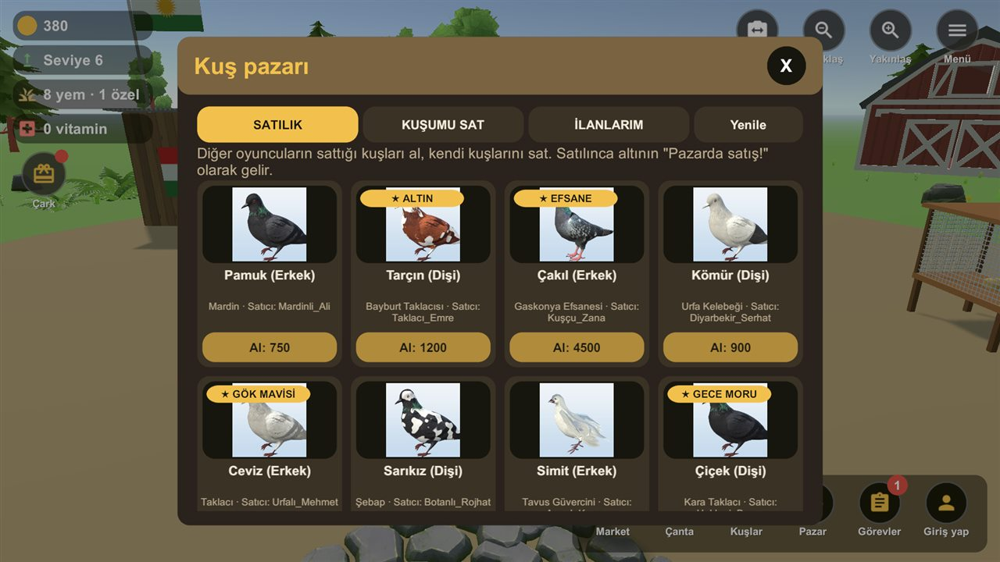
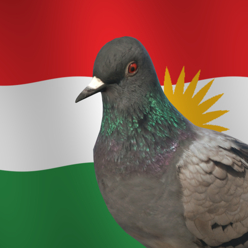
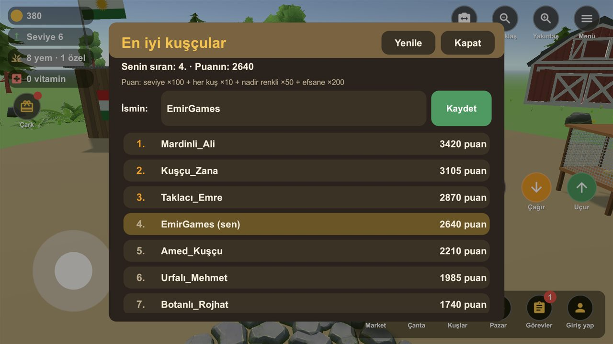
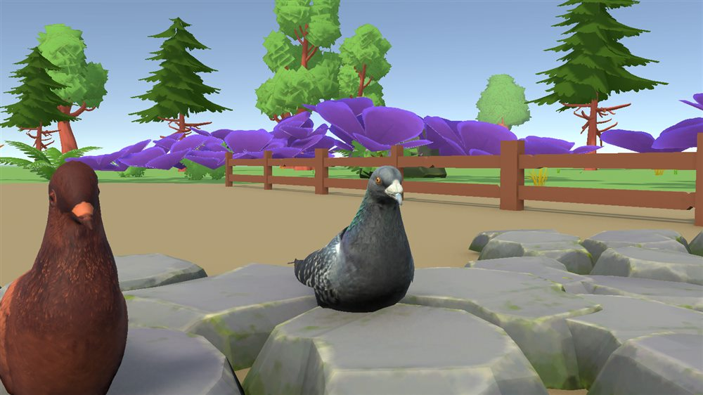
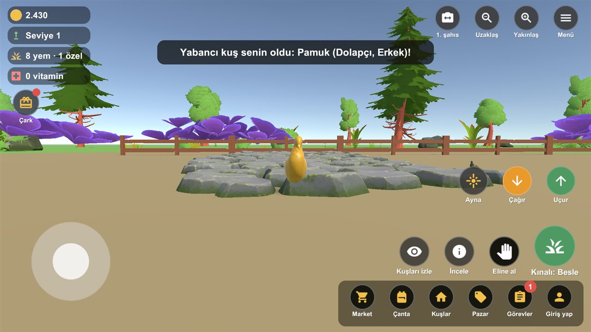
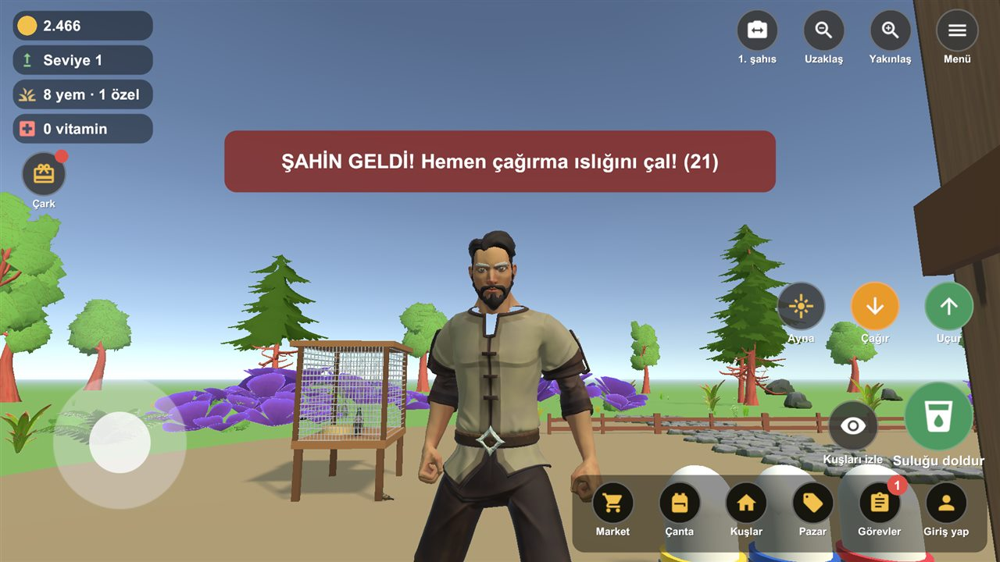
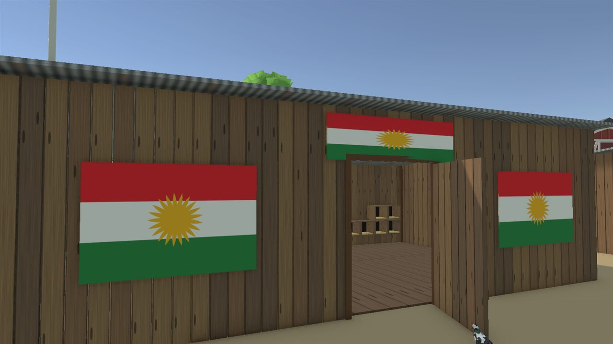
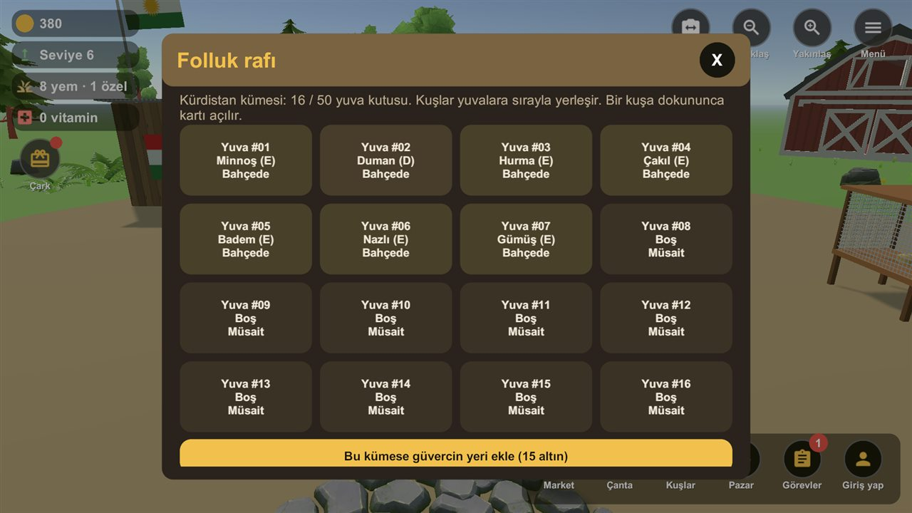
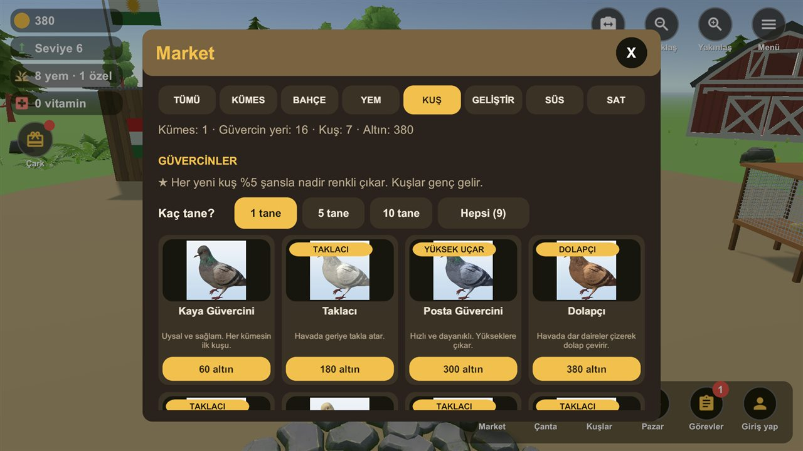

YENİ
Kuş pazarı
Diğer oyuncuların sattığı kuşları al, kendi kuşlarını istediğin fiyata sat. Satılınca altın hesabına gelir.

Kurdish PigeonYeni sürüm 0.6.0 · Dev güncelleme!
Besle, çoğalt, ters takla attır, pazarda sat. Kuşçuluğun bütün keyfi telefonunda.

Diğer oyuncuların sattığı kuşları al, kendi kuşlarını istediğin fiyata sat. Satılınca altın hesabına gelir.

En iyi kuşçular listesi. Kuşlarını çoğalt, nadir kuşlar topla, zirveye sen çık!

Taklacı, Mardin, Şebap, Bayburt Taklacısı, Urfa Kelebeği, Tavus ve efsane Gaskonya.

Altın, Gök mavisi, Gül pembesi, Zümrüt, Gece moru. Her yeni kuş %5 şansla nadir çıkar.

Taklacılar havada art arda takla atar. Şahin gelince ıslığı çal, kuşlarını kurtar!

Bayraklı özel kümes, 50 güvercin yeri. Kümesini istediğin yere kur, içine gir.

Her yuvada hangi kuş var gör. Kuşunu eline al, kümesine koy, yumurtalarını bekle.

Yem, vitamin, kümes ve kuşlar. Gökteki yabancı kuşları aynayla kümesine indir.
Kevokên xwe bifirînin! 🕊️